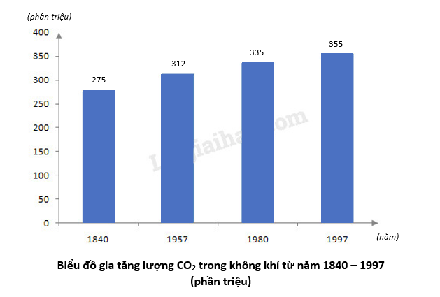

Ảnh Hưởng Của Nóng Lên Toàn Cầu
biến đổi khí hậu do con người gây ra đã và đang ảnh hưởng đến
nhiều hiện tượng thời tiết và khí hậu cực đoan ở tất cả các khu vực trên thế giới.
Thống kê từ 1900 - 1950:
Lượng khí thải Co2 tăng trong giai đoạn 1900-1950 chủ yếu là do ảnh hưởng của cuộc cách mạng công nghiệp lần thứ 2 diễn ra diễn ra vào nửa cuối thế kỷ 19 cho đến khi đại chiến thế giới lần thứ nhất xảy ra, loài người đã tiến tới sản xuất hàng loạt nhờ điện khí hóa do ứng dụng điện năng mà khí thải nhà kính và lượng co2 do tạo thành do sử dụng năng lượng nhiên liệu hoá thạch, sự phá rừng và khai thác đất.... là nguyên nhân chủ yếu gây ra biến đổi khí hậu nóng lên toàn cầu.Theo báo cáo đánh giá lần thứ tư của IPCC, phát thải KNK toàn cầu tăng từ thời kỳ tiền công nghiệp (khoảng năm 1750) và tăng 70% trong giai đoạn 1970 - 2004. Hàm lượng CO2, CH4 và N2O trong khí quyển do hoạt động của con người từ năm 1750 đến nay, đã vượt xa mức tích tụ tự nhiên trong hàng nghìn năm. Từ năm 1840 đến 2004, tổng lượng phát thải khí CO2 của các nước giàu chiếm tới 70% tổng lượng phát thải khí CO2 toàn cầu, trong đó ở Hoa Kỳ và Anh trung bình mỗi người dân phát thải 1.100 tấn, gấp khoảng 48 lần ở Ấn Độ cụ thể năm 1840, lượng CO2 trong không khí luôn ổn định ở mức 275 phần triệu (viết tắt là 275 p.p.m). Từ khi bắt đầu cuộc Cách mạng công nghiệp đến nay, lượng CO2 trong không khí đã không ngừng tăng lên:
Năm 1840: 275 phần triệu
Năm 1957: 312 phần triệu
Năm 1980: 335 phần triệu
Năm 1997: 355 phần triệu

Thống kê từ 1950 - 2000:
Các nhà khoa học cũng đang quan sát những thay đổi trong toàn bộ hệ thống khí hậu trái đất: trong khí quyển, trong đại dương, trên biển băng và trên các lục địa. Nhiều thay đổi trong số này là chưa từng có và một số đã xảy ra, trong khi những thay đổi khác - chẳng hạn như mực nước biển tiếp tục dâng - đã "không thể đảo ngược" trong nhiều thế kỷ, nếu không muốn nói là hàng thiên niên kỷ tới..
Nắng nóng cực đoan kể từ những năm 1950 tại Hawaii
Từ năm 1958, các trạm giám sát ở Hawaii ghi nhận lượng khí thải nhà kính tăng với tốc độ chóng mặt.
Sự nóng lên toàn cầu làm nhiệt độ đã tăng hơn 2,4 độ ở Nam Cực chỉ trong khoảng từ năm 1996 đến 2014.
Từ những năm 1950, các tảng băng ở Greenland cũng đang tan chảy nhanh hơn,các sông băng trên núi đã giảm đi đáng kể về phạm vi và khối lượng.Greenland nóng lên khoảng 2,7 độ chỉ trong khoảng từ năm 1996 đến 2014..
Thống kê từ 2000 đến nay:
Từ đầu thế kỉ 21, lượng khí thải Co2 đã đang tăng một cách chóng mặt khi nhiều nước phát triển vẫn đang chạy đua trong quá trình sản xuất, khai thác năng lượng,... Trong khi đó, nhiều nước đang phát triển ở châu Á đã chuẩn bị bước vào cuộc cách mạng công nghiệp lần thứ tư, kéo theo việc sản sinh khí thải từ các hoạt động công nghiệp ngày một lớn hơn và thiếu kiểm soát. Lượng phát thải đã tăng đến 32% trong giai đoạn 2000-2010, và vào năm 2020 tổng cộng là 34,81 tỷ tấn (so với 25,23 tỷ tấn của năm 2000). Nhiều hậu quả tồi tệ do biến đổi khí hậu đã và đang xuất hiện ngày càng nhiều, gay gắt hơn, và hủy diệt hơn.
- Cháy rừng ở Úc (2019 - 2020): Lượng phát thải Co2 ở Úc này luôn ở mức cao kỉ lục, mặc dù đã giảm từ 2013 nhưng vẫn chưa cải thiện tình trạng nóng lên nhanh (trung bình mỗi năm khoảng 18.7 tỉ tấn từ 2010 - 2020). Đỉnh điểm là thảm họa cháy rừng tồi tệ nhất ở châu lục này (12/2019 - 3/2020), hơn 12 triệu ha rừng bị thiêu rụi, gần 3 tỷ cá thể động vật trên cạn, đa số là các loài bò sát, bị ảnh hưởng, và một số loài bị đe dọa được cho là đã tuyệt chủng
- Tảng băng trôi ở Nam Cực (2021): Ngay cả châu lục lạnh nhất hành tinh cũng đang đối mặt với những hậu quả xấu từ lượng Co2 phát thải của con người. Nhiệt độ trung bình đã tăng từ 0.6 đến 1.5 độ C, ảnh hưởng từ sóng nhiệt, hiện tượng thủng tầng ô-zôn, các-bon đen,... Cơ quan Vũ trụ châu Âu (ESA), ngày 19-5-2021, cho biết, một tảng băng khổng lồ (4.320 km2) lớn hơn cả đảo Majorca của Tây Ban Nha đã tách khỏi rìa đông lạnh của Nam Cực vào Biển Weddell, trở thành tảng băng trôi lớn nhất thế giới.
- Mùa hè nóng nhất ở Ý (2021): Châu Âu là một trong những châu lục có mức độ sử dụng dầu khí, than đá cao nhất trên thế giới, khiến vai trò của việc giảm thiểu lượng Co2, phát triển năng lượng xanh càng thêm cấp bách. Từ năm 2010 đến 2018, lượng phát thải Co2 ở gần 90% châu lục trung bình từ 3.4 - 9.9 tỉ tấn (Lúc-xăm-bua giữ kỉ lục năm 2010 là 22.07 tỉ tấn), hàng trăm ngàn người chết vì nắng nóng. Đỉnh điểm là vào mùa hè 11 tháng 8 năm 2021 trên đảo Sicily của Ý (48.8 độ C).

Giảm khí phát thải gây hiệu ứng nhà kính không chỉ làm cho không gian sống bền vững hơn, mà còn giảm thiểu sự nóng lên toàn cầu đang diễn ra nhanh hơn dự kiến ban đầu của các nhà khoa học.

| Tái sử dụng và tái chế |
| Trồng cây xanh và bảo vệ tài nguyên rừng |
| Thay thế các loại bóng đèn truyền thống bằng đèn LED |
| Hạn chế sử dụng lò sưởi và điều hòa nhiệt độ |
| Thúc đẩy sử dụng năng lượng sạch |
| Hạn chế sử dụng túi nylon |
| Tắt nguồn điện khi không sử dụng |
| Cải tạo, nâng cấp hạ tầng |
https://en.wikipedia.org/wiki/ Climate_change
https://ozonewatch.gsfc.nasa.gov/
https://ourworldindata.org/